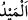

bilememiştir.
, yeryüzünün sallanması gibi büyük bir şeyin çalkalanıp sallanması demektir.
“Sizi sarsmasın diye” sizi eğdirmesini istemediğinden demektir. Çünkü yerin
parçalarının basitliği, onların yerlerinin ve durumlarının değişmesini gerektirir. Çünkü
o parçalardan herbirinin kendi zâtına veya kendisinin gereklerinden olan belli bir yer ve
özel bir duruma mahsus olması imkansızdır. Yeryüzü sizi sallamadan, yâni hareket
ettirip sarsmasın diye. Çünkü yeryüzü suyun üzerinde gemi gibi hareketli idi, sağlam
dağlarla sükûnet buldu. Nitekim Şeyh Sa‘dî (k.s.) şöyle der:
İyi kulların seccâdeleri gibi suyun üstüne
Toprak yaygısını yaydırdığı zaman,
Yeryüzü titreyip kımıldanmaya başlayınca
Onun eteklerini dağlarla mıhlamıştır.
el-Muvazzah’ta Dahhâk’tan şöyle nakledilir: “Hak Sübhânehû ve Teâlâ, yerinde sabit
kalsın diye on dokuz dağı yeryüzüne mıhladı. Bunlar Kaf, Ebû Kubeys, Cûdî, Lübnan,
Sînîn, Tûr-ı Sînâ ve diğer dağlardır.” Bilesin ki bazı rivâyetlere göre dağlar, el-
Muvazzah’ta belirtilenden daha fazladır. Nitekim Hicr sûresi (15/19) tefsirinde bu
hususta açıklama yapılmıştır.
Bazıları şöyle demiştir: “Dağlar yeryüzünün kemikleri ve damarlarıdır. Bu söz, sülûk
ehlinden olan kimsenin şu sözüne benzer: “Güneş ve ay bu taayyünün iki gözüdür.
Yıldızlar orada bir yere toplanmış değildir. Bu ancak, nurların onların bir kısım latîf
damarlarına yansımasıyla husûle gelir. Bu gerçeğe filozoflar muttali olamaz, bu ancak
keşf ile bilinir.”
“Ve orada” yeryüzünde çokluğu ve farklı türleri ile “her çeşit canlıyı yaydı.”
parçaladı, dağıttı.
, bir şeyi yaymak ve dağıtmak demektir. Rüzgarın toprağı dağıtıp yayması, nefsin
içinde bulunduğu gam ve kederi dağıtması gibi… Yeryüzünde her canlının yayılması,
Allah Teâlâ’nın onları mevcut değilken yaratıp ortaya çıkarmasına işârettir. “
”, hafif bir yürüyüş demektir. Bu fiil hayvanlar için, daha çok da haşerât için kullanılır.
“Biz gökyüzünden” buluttan -çünkü lügatte yukarında olan ve seni gölgeleyen her şeye
“semâ” denir- “su” yağmur “indirip,” bu su sâyesinde “orada” yâni yeryüzünde “her
faydalı” iyi ve faydası çok “nebattan çift çift bitirdik.”
Âyette üçüncü şahıstan birinci şahsa geçiş, göklerin ve yerin durumuna ne kadar
ehemmiyet verildiğinin bir göstergesidir.
el-Müfredât’ta şöyle denilir: “Kendi alanında değerli olan her şey “kerem” vasfıyla
tavsif edilir.
Âlemde bulunan her şey cevher, araz, madde ve sûret itibariyle ya bir zıddı, ya bir
misli veya bir terkibi olması itibariyle çifttir. Burada her terkip edilen şey için bir